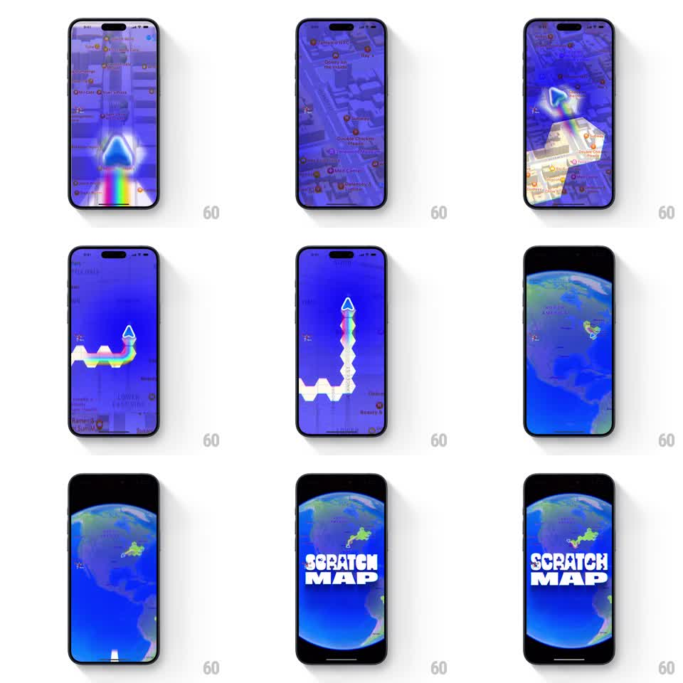

Media
Frame-by-frame

Rebuild this animation 1:1: Bump's scratch-map intro - a marker with a rainbow trail scratches a winding path across a purple-tinted city map, then the camera zooms out in stages from street level to the whole Earth, ending in a bold SCRATCH MAP title slam.

Rebuild this animation 1:1: Bump's scratch-map intro - a marker with a rainbow trail scratches a winding path across a purple-tinted city map, then the camera zooms out in stages from street level to the whole Earth, ending in a bold SCRATCH MAP title slam. ## Integration Integration: stack-agnostic spec - springs given as stiffness/damping, timed motions as duration + curve; map every value to your framework and animation library of choice. ## Scene A stylized map tinted deep purple with lighter roads and orange POI dots. A glowing arrowhead marker drags a rainbow ribbon trail, scratching a zigzag path through the streets (the scratched segment turns pale). As the camera zooms out, the map darkens into a blue Earth against black space, the scratched region glowing green. The sequence ends with "SCRATCH MAP" in heavy white block type over the globe. ## Motion spec Pattern: multi-stage zoom-out from street scratch to global reveal. - The marker dashes along its zigzag path (~1s), the rainbow trail and pale scratched segment drawing behind it with a slight glow pulse. - First zoom: street level to city (exponential scale, ~600ms, ease-in) - the scratch path shrinks to a glowing squiggle. - Second zoom: city to continent to full Earth (~900ms, ease-in accelerating), the map flattening into a blue globe on black; the scratched area becomes a bright green patch. - Title slam: "SCRATCH MAP" scales from ~1.4 to 1.0 and lands over the globe (spring stiffness ~300, damping ~18) as the globe's drift settles. ## Calibration - Zooms accelerate (ease-in, never linear) - constant speed reads as a map pinch, not a launch. - Each stage should land just long enough to register before the next zoom (~200ms hold). ## Reduced motion Cut directly from the scratched street view to the globe with the title fading in (300ms). ## Don't miss - The rainbow trail is the brand moment - saturated, glowing, and erased into a pale scratch behind the marker. - The title is huge, white, and slightly condensed; it owns the final frame.